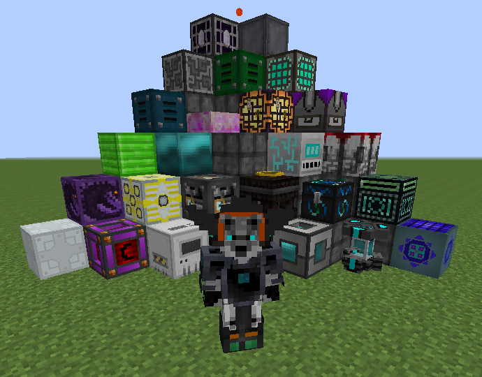

Добро пожаловать на мой сайт. Здесь Вы сможете скачать сборки для слабых ПК. Их список будет пополняться со всеремнем. Сайт тоже будет время от времени дорабатываться. Все сборки предстваленные тут, Вы можете скачать с Google диска.

Сборка для Minecraft ForgeOptifine 1.7.10 Данная сборка находится в бета-версии. (stable) Тематика сборки: TechnoMagic Автор: ZeroSixOne